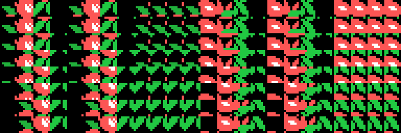

El scroll al pixel de Pippols
Pippols (Konami, RC-729, 1985) mueve el fondo de pantalla de pixel en pixel en un MSX1, en SCREEN 2, que es un modo que no tiene ni un registro de desplazamiento. Este documento explica cómo está hecho, con las direcciones del cartucho al lado y las cuentas medidas en el emulador.
Todo lo que sigue sale de leer el listado (src/pippols.asm) y de dos comprobaciones independientes:
tools/graficos.pyrehace en Python lo que hace la ROM —las mismas tiras, el mismo generador de caracteres, la misma tabla de nombres— y dibuja la pantalla. Si el modelo estuviera mal, no saldría el juego.tools/omsx_scroll.tclmide en openMSX cuánto cuesta, con el reloj del Z80 emulado (work/omsx/scroll.log).
1. El problema
En SCREEN 2 la pantalla son 24 x 32 caracteres de 8 x 8 pixeles. La tabla de nombres dice qué carácter va en cada casilla, y la tabla de patrones dice cómo es cada carácter. No hay desplazamiento por hardware, y hay tres complicaciones más:
- La tabla de patrones está partida en tres tercios (filas 0-7, 8-15 y 16-23) y cada tercio tiene sus propios 256 caracteres.
- Sólo hay 256 caracteres por tercio.
- Mover los 256 patrones de un tercio cada fotograma serían 2048 bytes por el puerto del VDP: imposible a 50 fotogramas por segundo.
Así que el desplazamiento suave hay que fabricarlo.
2. La idea: el mismo dibujo ocho veces
Pippols mete en la VRAM ocho copias de sus caracteres de fondo, cada una bajada un pixel más que la anterior:
caracteres 0x40-0x57 el fondo sin bajar (desplazamiento 0)
caracteres 0x58-0x6F el mismo, bajado 1 pixel (desplazamiento 1)
caracteres 0x70-0x87 ...bajado 2 pixeles
...
caracteres 0xE8-0xFF ...bajado 7 pixelesSon 8 x 24 = 192 caracteres, del 0x40 al 0xFF, o sea 1536 bytes de patrones y otros 1536 de color, y ocupan exactamente lo que queda de tercio desde 0x2200 hasta 0x2800. Los 64 primeros caracteres (0x00-0x3F) se quedan para el marcador, la fuente y el suelo.
Con eso, desplazar la pantalla un pixel es sumarle 24 a todos los números de carácter de la tabla de nombres. Ni un patrón se toca.
Ésta es la misma ventana de fondo en los ocho desplazamientos, reconstruida por tools/graficos.py:

Y los 192 caracteres de la fase 1 (cada fila es un desplazamiento):

3. Cómo se generan los 192 caracteres
Lo que hay comprimido en el cartucho son cuatro tiras de 24 bytes (0x5840 y siguientes), que son cuatro columnas de tres caracteres en vertical. CARGA_TIRAS (0x571E) las trae a 0xEA00, y CAMBIA_TINTAS (0x577D) les cambia tres parejas de tintas para que la misma forma salga de otro color en cada pantalla del mundo.
OCHO_DESPLAZAMIENTOS (0x569E) es el generador: para cada desplazamiento p de 0 a 7 llama dos veces a DOCE_CARACTERES (0x56B5), una por mitad. La mitad izquierda sale de las tiras 1 y 2, y la derecha de las 3 y 4. Por eso al volcar la tabla de nombres se escribe siempre un carácter y el que está 12 más allá: son las dos columnas de la misma pareja.
Los 12 caracteres de cada mitad, llamando A a la tira de arriba y B a la de abajo:
| índice | contenido |
|---|---|
| 0 | relleno arriba + los primeros 8-p bytes de A |
| 1, 2 | el resto de A, bajado p pixeles |
| 3 | el final de A + relleno abajo |
| 4-7 | lo mismo con la tira B |
| 8 | el final de A arriba, el principio de A abajo (A repitiéndose) |
| 9 | el final de A arriba, el principio de B abajo (costura A-B) |
| 10 | el final de B arriba, el principio de A abajo (costura B-A) |
| 11 | el final de B arriba, el principio de B abajo (B repitiéndose) |
Las cuatro últimas las monta CARACTER_DE_COSTURA (0x56ED), y son la clave de que esto funcione. Un carácter bajado tres pixeles deja tres filas de pixeles libres arriba, y ahí tiene que enseñarse el final del carácter que hay encima. Como el fondo se monta repitiendo y alternando dos tiras, sólo hacen falta cuatro combinaciones (A sobre A, A sobre B, B sobre A, B sobre B) y el dibujo sale continuo en cualquiera de los ocho desplazamientos.
El relleno de los caracteres 0-7 es el byte 0x11, que en la tabla de color de SCREEN 2 significa tinta 1 sobre fondo 1: negro sobre negro. Da igual que el patrón valga lo que valga; no se ve.
Los 192 caracteres se generan una sola vez por pantalla, en GENERA_FONDO (0x566D), y se copian a los tres tercios iguales para que el mismo número de carácter valga en cualquier fila.
4. La tabla de nombres, entera, cada fotograma
VUELCA_NOMBRES (0x5312) repinta las 24 filas x 22 columnas del área de juego en cada fotograma. La columna 0 y de la 23 en adelante no se tocan: ahí están el borde y el panel del marcador.
La fila no se guarda como 22 números de carácter, sino como 6 bytes en un buffer de RAM (0xE060-0xE0EF, 24 filas de 6). Cada byte describe cuatro columnas, o sea dos parejas:
| byte del buffer | qué sale |
|---|---|
| menor que 0x0F | pareja fija (sin desplazamiento) + pareja vacía |
| 0x0F a 0x7F | pareja n desplazada + pareja vacía |
| 0x80 a 0xDF | la pareja n-0x80 desplazada, dos veces |
| 0xE0 en adelante | una costura (8, 9, 10 u 11) y una tapa (0, 3, 4 o 7), elegidas por los tres bits de abajo |
El desplazamiento se aplica sumándole a cada número de carácter el valor que calcula FASE_DEL_SCROLL (0x5306):
L = 24 * (posicion_en_pixeles y 7)y el bucle de salida escribe, por cada byte del buffer, A, A+12, H y H+12. Al sexto byte sólo le caben dos columnas: 5 x 4 + 2 = 22.
Los caracteres por debajo del 0x0F no llevan el desplazamiento sumado: son el fondo liso y los adornos fijos, que se ven igual en los ocho.
5. Y cada ocho pixeles, una fila
PASO_DE_SCROLL (0x5239) es el que lleva la cuenta. Cada fotograma:
- suma (o resta) un pixel a la posición de la fase, que es un contador de 16 bits en 0xE100;
- guarda en 0xE11C la fase de 0 a 7;
- si no se ha cruzado el borde de un carácter, llama directo a
VUELCA_NOMBREScon el desplazamiento nuevo y ya está; - si se ha cruzado, corre el buffer entero seis bytes (un
lddrde 138 bytes) yARMA_FILA(0x5293) construye la fila que entra.
En ese momento la fase vuelve a 0, así que el salto de fila y el desplazamiento encajan sin costura.
6. De dónde sale la fila que entra
ARMA_FILA (0x5293) traduce una posición en pixeles a los 6 bytes de la fila, con tres tablas encadenadas:
posicion en pixeles
| DIVIDE (0x5653) entre 0xC0 = 192 pixeles = 24 filas
+--> tramo (0..12) y fila dentro del tramo (0..23)
|
| 0x53A2: 10 fases x 13 tramos -> numero de plano
+--> 0x5424: 19 planos x 6 piezas
+--> 0xE500: 44 piezas de 24 filas, un byte por filaO sea: una fase son trece tramos de 24 filas = 2496 pixeles, y cada tramo es una fila de seis piezas puestas una al lado de otra, cada una de cuatro columnas de ancho. La primera y la última suelen ser la pieza 2, que es el borde del camino.
Las 44 piezas no están en el cartucho tal cual: DESCOMPRIME_PIEZAS (0x5496) las monta en 0xE500 pegando 352 grupos de tres filas sacados de un diccionario de 25 entradas (0x54C0), con la lista de índices en 0x550B. Ocho índices por pieza.
Un detalle: la lista de índices tiene 328 bytes y el bucle lee 352. Las 24 últimas lecturas caen ya dentro del código de 0x5653, así que las piezas 41, 42 y 43 salen de basura. Ninguna tabla apunta a ellas.
Al empezar una pantalla, ARMA_PANTALLA (0x5384) hace esto mismo 24 veces seguidas, de abajo arriba, para llenar el buffer entero.
7. Lo que cuesta
Medido en openMSX sobre un Philips VG-8020 (PAL, Z80 a 3.579545 MHz, o sea 71591 ciclos por fotograma), dejando correr la demo 150 segundos emulados: 1112 fotogramas de juego, work/omsx/scroll.log.
| ciclos | % del fotograma | |
|---|---|---|
VUELCA_NOMBRES, media | 32557 | 45.5 % |
VUELCA_NOMBRES, máximo | 33969 | 47.4 % |
| La interrupción entera, media | 52533 | 73.4 % |
| La interrupción entera, máximo | 70080 | 97.9 % |
Reparto de los 1112 fotogramas de juego:
60- 70 % : 146
70- 80 % : 853
80- 90 % : 112
90-100 % : 1Y 732.7 escrituras al puerto de datos del VDP por fotograma: 528 son la tabla de nombres (24 x 22), unas 108 la tabla de sprites (27 sprites de cuatro bytes, y los tres disparos enemigos sólo tres fotogramas de cada cuatro) y el resto —hasta 128— los patrones del jugador, que se recargan enteros en cada fotograma.
O sea: repintar la tabla de nombres se lleva el 62 % del tiempo de la interrupción, y la interrupción se come tres cuartas partes del fotograma. El programa principal no hace nada —se queda en jr $ en 0x4074— porque no le sobra tiempo para nada.
8. Por qué así y no de otra manera
- Mover los patrones (rodar los 8 bytes de cada carácter) costaría 1536 bytes por fotograma sólo para el fondo, y además hay que hacerlo en los tres tercios: 4608. Es más del doble de lo que cuesta repintar los nombres, y encima habría que leer de la VRAM o llevar una copia en RAM.
- Rodar la tabla de nombres (dejar los caracteres quietos y mover la ventana) no vale en SCREEN 2: al pasar una fila de un tercio a otro, el mismo número de carácter cambia de dibujo. Pippols lo esquiva cargando los tres tercios iguales, pero aun así seguiría moviéndose de ocho en ocho pixeles, no de uno en uno.
- El precio de la solución elegida son los 192 caracteres: tres cuartas partes del juego de caracteres se van en el fondo. Por eso el marcador está en un panel a la derecha con su propia fuente de 42 caracteres, y por eso el fondo sólo tiene doce parejas distintas.
9. Lo que no se puede afirmar
- Las medidas son de la demo, que juega sola y no llena la pantalla de enemigos. Con diez enemigos y dos disparos en marcha el fotograma dará más.
- El único fotograma que pasó del 90 % en la muestra no se ha aislado: no se sabe si es un cambio de pantalla o una punta normal.